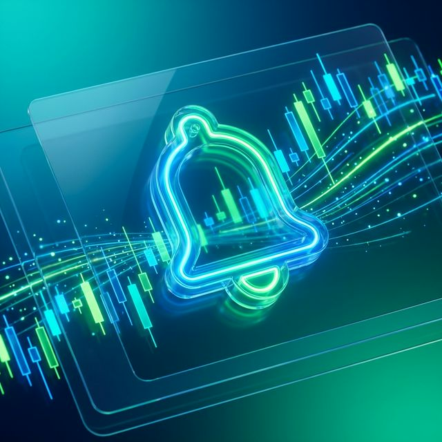

Bạn có thể giao dịch trực tiếp từ biểu đồ TradingView theo 2 cách: (1) Trading Panel để đặt lệnh tay ngay trên nến với các sàn hỗ trợ chính thức (OKX, BingX, Pepperstone, OANDA, Interactive Brokers, Paper Trading), hoặc (2) Webhook Alerts để tự động gửi gói tin JSON từ Pine Script sang bot giao dịch (3Commas, WunderTrading, OKX Signal Bot, Telegram) 24/7.
Mục lục bài viết
1. Cách 1: Kết nối trực tiếp sàn giao dịch qua Trading Panel
Đặt lệnh ngay trên biểu đồ giúp bạn kéo thả trực tiếp thanh Stop Loss và Take Profit bằng chuột thay vì gõ tay từng con số dễ nhầm lẫn:
- Mở thanh đáy màn hình biểu đồ và chọn tab Trading Panel.
- Chọn sàn giao dịch bạn đang dùng (ví dụ: OKX, BingX, CoinEx cho Crypto; Pepperstone, OANDA, Eightcap, IC Markets cho Forex/Vàng; hoặc Paper Trading để luyện tập tiền ảo).
- Bấm Connect và đăng nhập xác thực OAuth của sàn.
- Nhấn phải chuột lên bất kỳ mức giá nào trên biểu đồ → chọn Trade → Buy/Sell Limit hoặc bật nút Buy/Sell nhanh ở góc trên bên trái.
2. Cách 2: Tự động hóa hoàn toàn bằng Webhook Alerts
Khi bạn đã có một chiến lược Pine Script đã kiểm thử kỹ lưỡng, Webhook URL cho phép TradingView gửi ngay một HTTP POST request đến máy chủ bot mỗi khi cảnh báo kích hoạt — hoàn toàn tự động ngay cả khi bạn đang ngủ.
- Nhấn
Alt + Ađể mở hộp thoại Create Alert và chọn điều kiện từ chiến lược hoặc chỉ báo Pine Script. - Chuyển sang tab Notifications → tick chọn Webhook URL và dán đường dẫn HTTPS của bot (lưu ý: TradingView chỉ hỗ trợ cổng
80và443). - Quay lại tab Settings, nhập nội dung JSON vào ô Message và bấm Create.
3. Mẫu JSON chuẩn cho Webhook gửi sang Bot / Telegram
TradingView hỗ trợ các biến động (placeholders) như {{ticker}}, {{close}}, {{strategy.order.action}}. Ví dụ mẫu JSON gửi lệnh chuẩn:
{
"secret": "YOUR_PRIVATE_PASSPHRASE",
"symbol": "{{ticker}}",
"exchange": "{{exchange}}",
"interval": "{{interval}}",
"action": "{{strategy.order.action}}",
"price": "{{close}}",
"time": "{{timenow}}"
}Mẹo cực quan trọng: Nếu dùng chiến lược Pine Script, hãy chọn tùy chọn kích hoạt Order fills only và thiết lập cảnh báo dạng Open-ended (Không hết hạn) trên gói Premium để bot không bao giờ bị ngắt kết nối giữa chừng sau 2 tháng.
4. 4 quy tắc bảo mật & quản trị rủi ro khi chạy Bot Webhook
- Luôn đặt mật khẩu xác thực (Passphrase/Secret): Kiểm tra trường
secretở đầu server nhận Webhook và đối chiếu dải IP chính thức của TradingView. - Tắt quyền rút tiền (Disable Withdrawal) trên API Key sàn: API Key kết nối bot chỉ nên cấp quyền đọc dữ liệu và đặt lệnh (Trade), tuyệt đối không bật quyền rút tiền.
- Chạy thử bằng Paper Trading hoặc vốn siêu nhỏ 1 tuần: Xác minh bot không bị gửi lệnh trùng (duplicate order) khi mạng rung lắc.
- Luôn có Stop Loss cứng trên sàn: Không chỉ dựa vào tín hiệu đóng lệnh từ Webhook, đề phòng trường hợp sàn bảo trì hoặc mất kết nối internet.
5. Câu hỏi thường gặp (FAQ)
Gói TradingView nào hỗ trợ Webhook URL?
Từ gói Essential trở lên đều hỗ trợ Webhook URL. Tuy nhiên gói Premium cho 400 cảnh báo đồng thời và cảnh báo không hết hạn, phù hợp nhất cho hệ thống chạy bot ổn định dài hạn.
Đặt lệnh trực tiếp từ TradingView lên sàn có mất thêm phí không?
Không. TradingView không thu phí trung gian; bạn chỉ trả đúng phí giao dịch tiêu chuẩn của sàn đã kết nối.
Có gửi được cảnh báo Webhook vào Telegram không?
Có. Bạn chỉ cần nối Webhook URL qua Cloudflare Worker, n8n hoặc Make.com để định dạng tin nhắn và gửi tức thì vào Telegram Bot.
Chạy Bot 24/7 Với 400 Cảnh Báo Không Hết Hạn
Nâng cấp TradingView Premium chính hãng tại TradingView.vn — giá ưu đãi giảm đến 72%, hỗ trợ kỹ thuật xuyên suốt.
Xem Bảng Giá Ưu Đãi